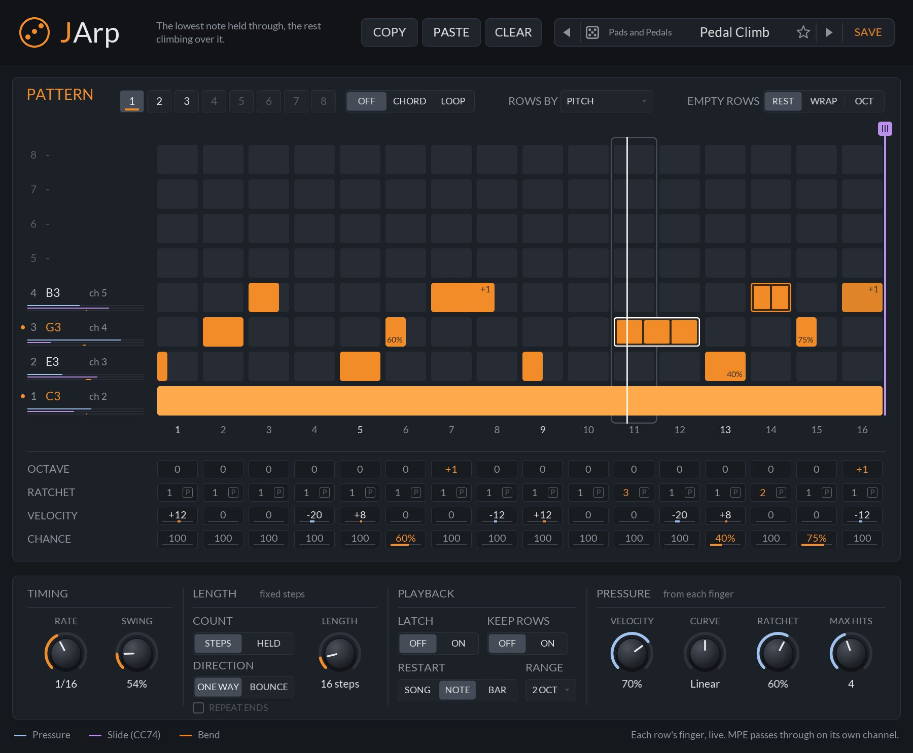
Chapters 2 to 4 get you installed, playing and around the panel. Chapter 5 explains the one idea everything hangs on, and Chapters 6 to 13 cover each part in the order of the JArp walkthrough video, so the two can be used together. Chapter 14 lists every factory preset. Panel labels are set in bold, such as ROWS BY; rows count from the bottom of the grid, and middle C is C4, as JArp names it.
An arpeggiator you draw. Hold a chord, and a grid plays it, one finger's expression at a time.
Most arpeggiators give you a list of modes: up, down, up and down, random. JArp gives you a grid. Each row is one of the notes you hold, and each column is a step in time. Light a cell and that row's note plays on that step, for as long as the cell is drawn. Draw a staircase and you have an up arpeggio; draw a long bar along the bottom row and you have a pedal note under it. Change the chord and the same shape plays the new notes.
Because a row is a held note rather than a fixed pitch, one drawn pattern fits every chord you play. And because the grid is just notes and steps, the same idea covers far more than arpeggios: bass lines, fingerpicking, piano accompaniment, sequencer lines and drum beats, where each key you hold is a drum.
JArp is made for MPE controllers such as the LinnStrument, though any MIDI keyboard works. Every note it plays goes out on the channel and key of the finger it came from, so the synth after it still hears that finger's pressure, slide and bend. Pressing harder can play louder, or add ratchet hits to a step.
JArp never invents a pitch. Every note it plays is one of the keys you hold, moved by octaves at most. The dice, the presets and every row mapping keep to that, so it can't play a wrong note against your chord.
JArp ships in the JClap bundle as a CLAP note effect.
The quickest way installs every JClap plug-in from the latest release. Quit your music app, open Terminal, paste this line and press Return, and reopen the app once it says Done:
curl -fsSL https://raw.githubusercontent.com/jeffmhopkins/Jclap/main/install-macos.sh | bash
The plug-ins are signed but not notarized, so macOS quarantines plug-ins downloaded through a web browser, and some hosts (Bitwig among them) silently skip them. Use the line above. If you already downloaded the zip, clear the flag once after copying:
xattr -dr com.apple.quarantine ~/Library/Audio/Plug-Ins/CLAP/*.clap
Download jclap-Windows.zip or jclap-Linux.zip from github.com/jeffmhopkins/Jclap/releases/latest (or jclap-JArp-0.16.0.zip for JArp alone), copy JArp.clap into C:\Program Files\Common Files\CLAP or ~/.clap, and restart your host. JArp appears as a note effect.
JArp works on notes, so it goes on the instrument track, before the instrument: before an MPE synth (such as JSynth or JBreath, in the same bundle) to hear each finger's expression, or before any synth, drum machine or sampler. The notes you hold don't pass through, only the arp's notes; other MIDI passes straight through.
From an empty slot to a pattern of your own in seven steps.
Hover over a control for a one-line tip. The grid and the lanes have none, so nothing pops up while you draw.
The grid in the middle, how rows find their notes across its top, the lanes under it, and the settings along the bottom.
A white line moves through the steps in time with the transport, and the column it is in has a frame round it. A note playing lights up, and so does its row's note name, with a dot beside it. A softer note (a lower Velocity) draws fainter, a note left to chance shows its percent in its lower corner, a note with an Octave shift shows it in its upper corner, and a ratcheted note shows its hits. Steps past the pattern's length are dimmed.
Each row's label shows the note it is playing and the MIDI channel it goes out on. Three hairlines along the bottom of each label follow that row's finger live: pressure in blue, slide (CC74) in purple, and bend from the middle in orange. The key along the bottom of the panel is a reminder.
Every setting except the patterns themselves is a host parameter, so it can be automated. Knobs work the same everywhere on the panel:
| Action | On a knob |
|---|---|
| Drag up / down | Change the value. A popup shows the value while you drag. |
| Shift + drag | Fine adjustment. |
| Scroll wheel | Step the value up or down. |
| Double-click | Back to the default. |
| Right-click | Menu with Reset to default and Enter value… to type an exact number. |
The panel is 900 × 743 at 100%. Right-click any empty part of the panel and choose UI Size to scale it to 75%, 100%, 125%, 150% or 200%. The same menu has Check for Updates: when a release has a newer JArp, the header says so once per session.
Rows are the notes you hold. Columns are steps in time. A lit cell plays its row's note for as long as it is drawn.
Hold a C major 7th, C3 E3 G3 B3. With ROWS BY on PITCH (the default), row 1 at the bottom of the grid plays your lowest note, C3; row 2 the next one up, E3; row 3 G3; row 4 B3. The steps run left to right at the RATE, a sixteenth each by default. On each step, every lit cell plays its row's note.
There is no gate setting. A note drawn across one step sounds for one step; drawn across four, it sounds for four; drawn across a quarter of a step, it is a short pluck. A note stops at the next note in its row. Draw row 1 across the whole pattern and it holds a pedal under everything else.
Since a row means "the second note you hold" rather than "E3", a pattern is a shape, and any chord fills it. That is why one preset works for C major, A minor and an F major 7th alike. What happens when the chord has fewer notes than the pattern has rows is up to EMPTY ROWS, and whether rows count notes or scale steps is up to ROWS BY (Chapter 8). How many steps play can follow the chord too (Chapter 9).
Every note JArp plays goes out on the channel and key of the finger it comes from, moved by the step's octave. On an MPE controller each finger has its own channel, so the synth after JArp hears that finger's pressure, slide and bend on every note the arp plays from it (Chapter 11). On an ordinary keyboard everything shares one channel, and JArp works just the same.
With the transport running, JArp follows the song position and tempo. With it stopped, JArp runs on its own clock at the host's tempo, so you can play it without pressing play. Where a pattern starts is up to RESTART (Chapter 10).
Eight rows by up to 128 steps, sixteen in view at a time. Row 1 is at the bottom.
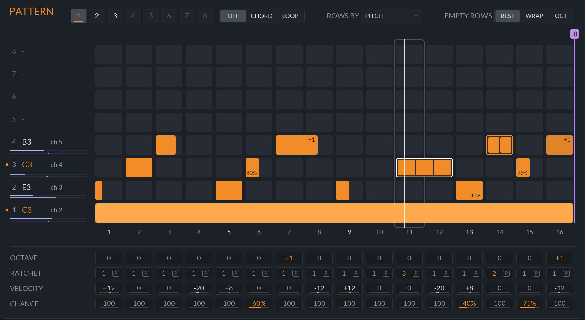
| Action | What it does |
|---|---|
| Click an empty cell | Adds a one-step note. Keep the button down and drag: every empty cell the mouse passes gets a note too, until you let go. |
| Click a note | Removes it. Keep the button down and drag: every note the mouse passes is removed too. |
| Drag a note's right edge | Sets how long it sounds, in quarter steps, from a quarter of a step to the whole pattern. The handle is a narrow strip just inside the edge: it lights white, and the pointer turns to a resize arrow, when you're on it. The length only follows a deliberate drag, so a click that wobbles leaves it as it was. |
| Drag the purple bar | Sets the pattern's length, from 1 to 128 steps. The LENGTH knob is the same setting. Each pattern has its own length. |
Picking notes lets you move or edit several at once. Picked notes have a white edge.
| Action | What it does |
|---|---|
| Shift + drag | Draws a box from anywhere that picks every note it touches, adding to what's picked. |
| Shift + click a note | Adds it to the pick, or drops it. |
| Right-click a note | Picks just that one. Right-drag from an empty cell draws a box too. |
| Drag a picked note | Moves every picked note together, keeping their shape, each note's length and its lane values. A move that would take a note off the grid, past the pattern's end or onto another note stops where it last fit. A note that lands just before another is shortened to fit. |
| Alt + drag a note | Moves a note that isn't picked (Option on a Mac). |
| Click a picked note | Without dragging, removes it, as any click on a note does. |
A pattern longer than 16 steps scrolls. Drag the purple bar past the right edge and the grid scrolls on with it. A bar under the step numbers shows the whole pattern: the lighter part is the 16 steps in view, the ticks are steps where notes start, and the orange line is the playhead. Beside it are the steps in view (17-32 of 48) and FOLLOW.
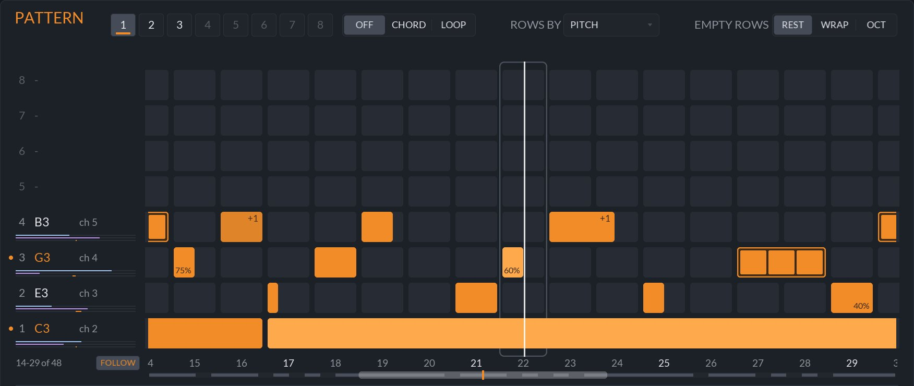
Notes and lane settings past the pattern's length are kept, dimmed, so shortening a pattern and lengthening it again loses nothing.
Four rows of numbers under the grid, one cell per step, for the notes that start on that step.
Drag a lane cell up or down, or scroll on it, to change it. Double-click it to set it back.
| Lane | Range | Default | What it does |
|---|---|---|---|
| OCTAVE | −3 to +3 oct | 0 | Moves the step's notes up or down by octaves, for leaps and bass drops. A note shows its octave in its corner. RANGE still applies (Chapter 8). |
| RATCHET | 1 to 8 hits | 1 | Splits each note into equal hits across its length, for rolls and trap hats. The note on the grid shows its hits. The small P beside the number makes the step's ratchet follow pressure (Chapter 11). |
| VELOCITY | −64 to +64 | 0 | Added to the note's velocity, for accents. Softer notes draw fainter. |
| CHANCE | 0 to 100% | 100% | How likely the step's notes are to play each time round, so a loop never repeats exactly. Each note rolls on its own, so at 50% a chord on that step thins out differently every pass. A ratcheted note plays all its hits or none. A cell under 100% shows in orange with a bar under it. |
The lanes are per step, so every note starting on a step shares them. To set one note apart, right-click it. It gets a white outline, NOTE shows beside the lane names, and its step's column in the lanes (outlined in white) now edits that note alone. A value you change becomes the note's own; values it still takes from the step show dim. Double-click a value to hand it back to the step. A note with values of its own shows a white dot in its corner. Right-click it again, or click an empty cell, to go back to editing steps.
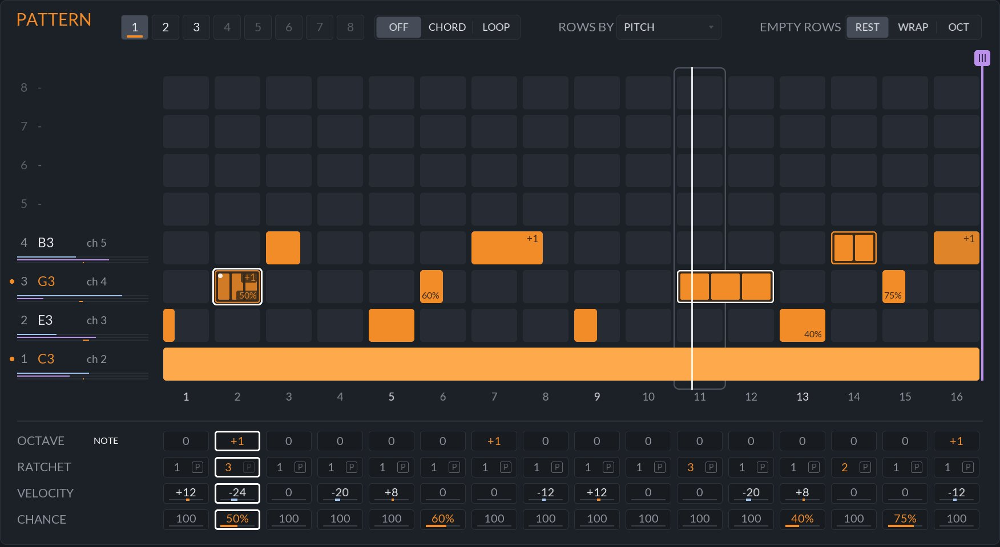
With several notes picked, the lane names show how many (4 NOTES), each picked note's column is outlined, and an edit to any of those columns sets that value on every picked note at once: drag one CHANCE cell to 50% and all of them are at 50%. Double-click hands that value back to the step for all of them.
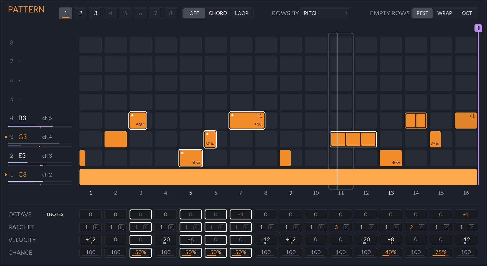
ROWS BY decides how the notes you hold are laid out on the rows. It is the setting that most changes what a pattern means.
| ROWS BY | A row is… |
|---|---|
| PITCH | The nth note you hold, counting up from the lowest. The default, and what most presets use. |
| DEGREE | A step of a scale counted up from your lowest note. A degree you aren't holding plays the nearest note you are. |
| HELD DEGREE | As DEGREE, but a degree you aren't holding stays silent. |
| SPREAD | A place between your lowest and highest note, however many notes you hold. |
In PITCH, row 1 is the lowest note you hold, row 2 the next up, and so on: hold a 7th chord and rows 1 to 4 are its four notes. A triad fills three rows, so what should rows 4 and up play? That is EMPTY ROWS, beside ROWS BY:
| EMPTY ROWS | Rows above the notes you hold |
|---|---|
| REST | Stay silent. The default. |
| WRAP | Go round your notes again: with three held, row 4 plays row 1's note. |
| OCT | Go round again an octave higher each time: rows 1 to 3 are your triad, rows 4 to 6 the triad an octave up. OCT makes one shape fit any chord size: rows 1, 4 and 7 are always the root in three octaves with a triad, and with a 7th chord the octave starts on row 5 instead. |
| Holding C3 E3 G3 | Row 1 | 2 | 3 | 4 | 5 | 6 | 7 | 8 |
|---|---|---|---|---|---|---|---|---|
| REST | C3 | E3 | G3 | – | – | – | – | – |
| WRAP | C3 | E3 | G3 | C3 | E3 | G3 | C3 | E3 |
| OCT (Range 4 Oct) | C3 | E3 | G3 | C4 | E4 | G4 | C5 | E5 |
| OCT (Range 2 Oct) | C3 | E3 | G3 | C4 | E4 | G4 | C5 | E4 |
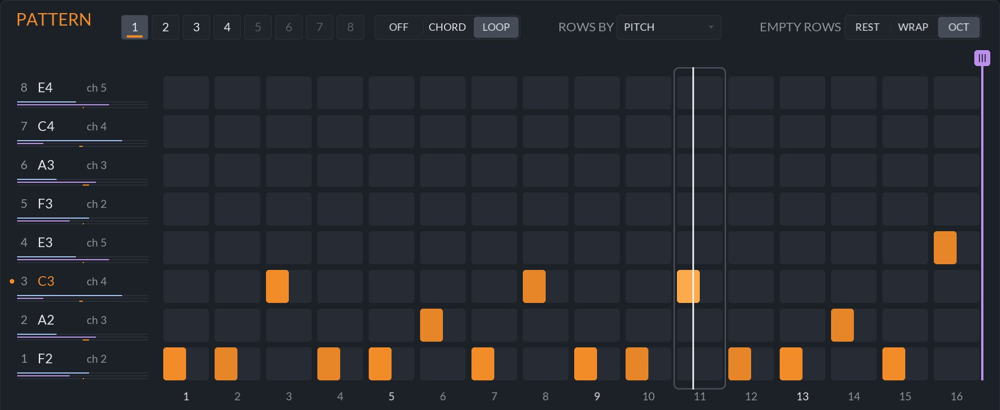
A note on a row that nothing held plays (a row above your notes with REST, or a degree you aren't holding with HELD DEGREE) shows grey on the grid while you play, and turns orange again when you hold enough notes.
Hold a single note with OCT rows and every row is that note, an octave higher than the last: row 8 would be seven octaves up. RANGE, under PLAYBACK, keeps the arp in one register so it doesn't climb out of your mix. It caps how far above your lowest held note an octave shift may take a note, from 1 to 4 octaves (2 to start with). OCT rows and the Octave lane both obey it.
A note that would go past the range drops back down by octaves until it fits; one shifted down past the range comes back up the same way. Holding C3 at 2 octaves, nothing goes above C5, so in the table above row 8, which wanted E5, folds back to E4. At 1 octave the staircase climbs and then turns back on itself; at 4 there's room to climb. The keys you actually hold are never moved, however far apart they are.
In DEGREE, rows count up a scale from the lowest note you hold. Pick the scale's key and MAJOR or MINOR in SCALE, which takes EMPTY ROWS' place. Row 1 is your lowest note, row 3 the 3rd above it, row 5 the 5th, and so on, with the rows labelled 1st to 8th.
A degree you aren't holding plays the held note nearest to it, so DEGREE only ever plays notes from your chord. Where two held notes are equally near, the one in the scale wins, and then the lower. So rows 1, 3 and 5 play the triad of whatever chord you hold in the key: C, then A minor, then F. And rows 1 and 5 alternating play the root and fifth of any chord.
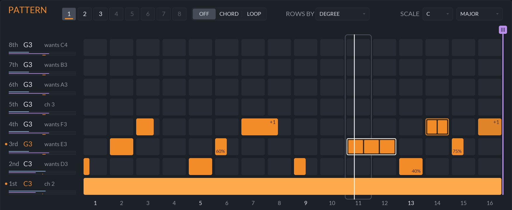
HELD DEGREE is DEGREE, except a degree you aren't holding stays silent instead of playing the nearest note. It plays when you hold that note in any octave, right where you hold it. Hold C and G, and a pattern of 1st, 3rd and 5th plays only the C and G; add the E and the 3rd comes in. Use it to bring parts in and out with your hand.
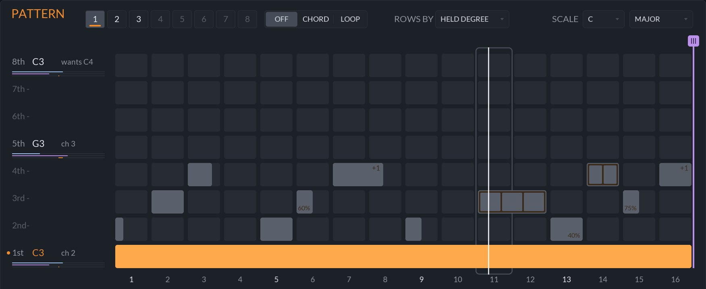
In SPREAD, the pattern's rows spread over however many notes you hold. Its bottom row plays your lowest note and its top row (the highest row with a note on it) your highest, and the rows between play the notes nearest their place between. A pattern on rows 1, 2 and 3 plays the bottom, middle and top of the chord, whether you hold 3 notes or 10, two hands wide. Same pattern, much wider sound.
With fewer notes held than rows, rows share notes, and a note two rows land on plays once.
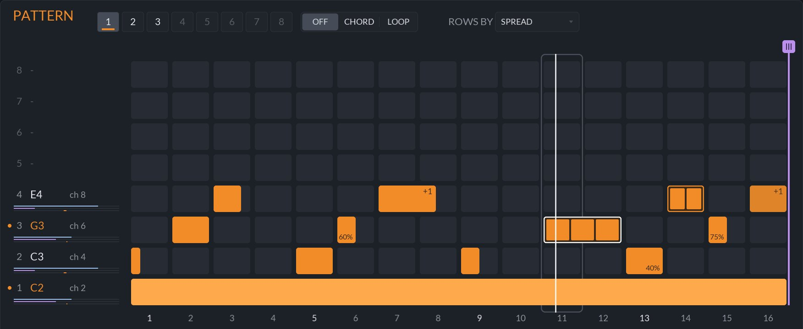
How many steps the pattern plays, and which way round. Each of the eight patterns has its own.
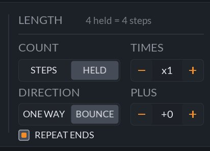
The LENGTH box at the bottom of the panel sets the pattern's length and direction. The line beside its title says what it comes to, such as 4 held = 4 steps or fixed steps.
These are part of the pattern, not host parameters: they are saved with the pattern, copied with it, and loaded with it from a preset.
| Control | Range | Default | What it does |
|---|---|---|---|
| COUNT | Steps, Held | Steps | STEPS plays a set length. HELD plays so many steps for each note you hold. |
| LENGTH | 1–128 steps | per pattern | With STEPS, the pattern's length: the same setting as the purple bar. With HELD, it stands in while nothing is held. |
| TIMES | ×1 – ×8 | ×1 | With HELD: steps for each note held. |
| PLUS | −16 – +16 | +0 | With HELD: steps added (or taken away), 1 to 128 in all. |
With STEPS, eight steps over a triad with OCT rows climbs on up through the octaves. Switch to HELD and you get one step for each note you hold: a pattern that walks up its rows then plays exactly your chord, whatever the chord. Add a note and the pattern grows to fit. ×2 gives two steps per note, so with OCT rows the second pass is your chord an octave up. +1 adds a step: up the chord, landing on the root an octave higher.
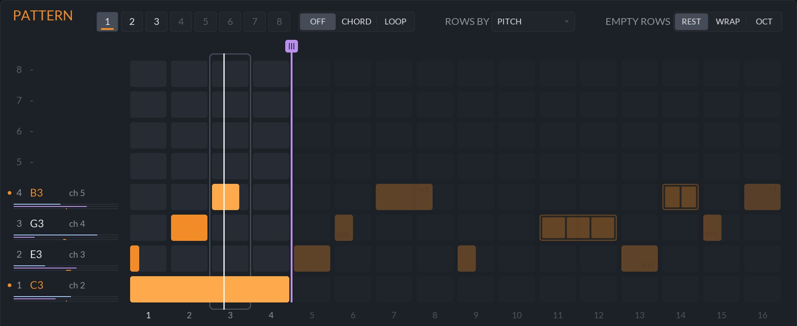
With KEEP ROWS on (Chapter 10), a key let go still counts until every key is up.
| Setting | Four steps play | What it does |
|---|---|---|
| ONE WAY | 1234·1234 | Step 1 to the end, then round again. The default. |
| BOUNCE | 123432·12 | Up to the last step and back down. The first and last steps play once each time round, so the turns don't stutter. The playhead runs back down the grid on the way back. |
| BOUNCE + REPEAT ENDS | 12344321 | The first and last steps play twice at the turns. REPEAT ENDS is the box under DIRECTION, dimmed when ONE WAY. |
With HELD, a simple up pattern becomes up-and-down for any chord. REPEAT ENDS is the one to reach for when the bounce has to stay in time with the bar: a 16-step bounce takes 30 steps round, but with REPEAT ENDS it takes 32, two bars of sixteenths. Four held notes fill eight steps.
Up, Up Two Octaves, Up and Over, Up Down, Up Down Repeat Ends, Up Down Two Octaves, Root Pedal, Pedal Bounce and Breath Pulse set their LENGTH by the notes HELD, so they fit whatever chord you play, and the Up Down ones BOUNCE. The grooves, kits and the rest keep a set number of steps, so they stay in time with the bar.
What happens when you let go, when the pattern starts, and how fast it runs.
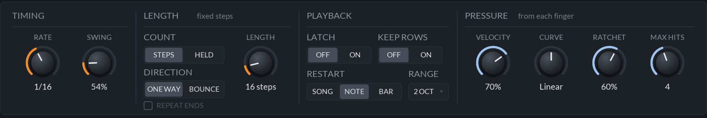
LATCH on keeps the notes playing after you let go, until you play a new chord. A host's All Notes Off (or a note choke) stops them too.
The sustain pedal (CC64) works the way it does on a piano: while it's down, keys you let go of stay in the chord and the arp keeps playing them; new keys join it. Lifting the pedal lets go of every key no longer held. JArp keeps the pedal for itself rather than passing it on, so the arp's own note lengths stay as drawn.
Normally rows follow the notes you hold, so letting go of one moves the notes above it down a row. KEEP ROWS on lets a key you let go of keep its row, resting, until every key is up. Hold C, E and G on rows 1 to 3 and let go of C: row 1 rests while E and G stay on rows 2 and 3 instead of shifting down. Press C again and it takes row 1 back; a different new key is fitted in by pitch as usual. Once every key is up, the next chord starts afresh.
It is made for drums. Hold a beat and lift the kick: its row rests while the snare and hats stay on their rows. Without Keep Rows everything shifts down, and the snare drops onto the kick's row. It is off to start with; the Drum Kit presets turn it on.
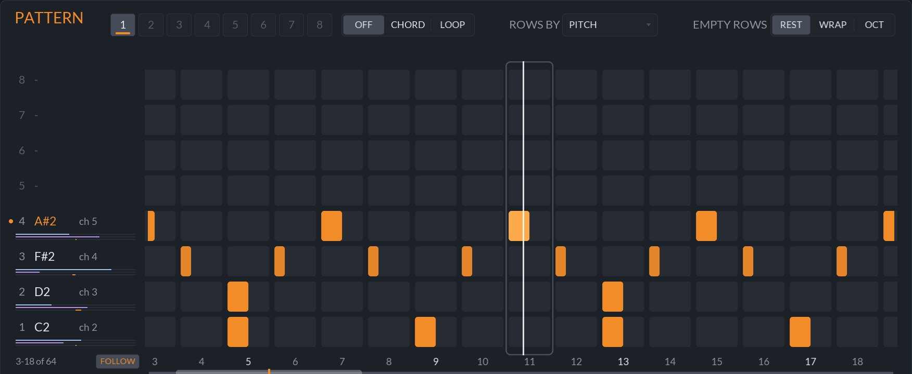
RESTART says where the pattern starts from step one.
| Setting | The pattern starts… |
|---|---|
| SONG | Locked to the song position, so it is sequenced in time rather than started by your hands: play a chord halfway through the pattern and it starts halfway through. Each step falls on the same beat every time round. For parts that sit in a track. |
| NOTE | On the first note you play. The default, for playing live. |
| BAR | At the start of the bar the first note falls in. |
| Control | Range | Default | What it does |
|---|---|---|---|
| RATE | 1/32, 1/16T, 1/16, 1/8T, 1/8, 1/4 | 1/16 | How long a step is. The T rates are triplets. |
| SWING | 50–75% | 50% | Pushes every second step later. 50% is straight; around 66% is a triplet shuffle. |
Press harder to play louder, or to add hits. Every finger's expression follows the notes it plays.
The PRESSURE box sets what each finger's pressure does to the notes it plays. The pressure is read when each note starts.
| Control | Range | Default | What it does |
|---|---|---|---|
| VELOCITY | 0–100% | 50% | How far each note's velocity follows its finger's pressure, rather than how hard the key was struck. At 0 it's the strike velocity alone. The Velocity lane's offset is added after. |
| CURVE | Soft 100% – Linear – Hard 100% | Linear | How pressure maps. Soft reaches high values with a light touch, Linear is as played, Hard needs a firm press. It shapes both Velocity and Ratchet. |
| RATCHET | 0–100% | 60% | How far pressure adds hits on steps with P lit, from the step's own count up to MAX HITS. |
| MAX HITS | 1–8 | 4 | The most hits a pressed P step splits into. |
To make a step's ratchet follow pressure, click the small P in its RATCHET lane cell. The note then shows the extra hits it could take as blue outlines, filled as the finger presses. Great for rolls you play by feel.
Each arp note plays on the channel and key of the finger it comes from (plus the step's octave), shown as ch beside each row. So an MPE synth (set to MPE, with your controller's bend range) plays it with that finger's expression:
Eight patterns, played one at a time, one per chord, or one after another as a long phrase.
JArp holds eight patterns, 1 to 8, in the strip beside the PATTERN title. Click a number to play it and edit it on the grid. A lit number has notes in it; the one playing has an orange bar under it. Each pattern keeps its own notes, lanes, length and direction.
The switch beside the numbers says how playing moves along them:
| Setting | What plays |
|---|---|
| OFF | The pattern selected. |
| CHORD | Each new chord moves to the next pattern. Let go of every note, play again, and the next pattern starts; the first chord plays the one selected. So a chord progression gets a different figure on every chord. |
| LOOP | While you hold, each time a pattern ends the next one starts, so 1, 2 and 3 play as one long phrase. Each new chord starts the phrase again from the one selected. |
Empty patterns are skipped, and after the last pattern with notes it goes round to the first. To chain 1, 2 and 3, fill those three and leave the rest empty; clear one to drop it from the chain.
While a chain plays, the grid and lanes follow it: when CHORD or LOOP moves on, the pattern now playing is the one shown, and edits go to it. Click a number to show and edit that one; the grid stays on it until the chain moves on again, and goes back to the selected pattern when playing stops.
With RESTART on SONG, the chain follows the song too. In LOOP the patterns are laid end to end from the start of the song (beginning with the one selected), so where the song is decides which pattern plays and which step: come in during the third bar of a 1-2-3 chain and you hear the part of the chain that falls there. In CHORD the next pattern picks up at the step the song has reached in it.
Both are host parameters, so you can automate or modulate them: Pattern (1 to 8, as the strip numbers them) picks the pattern, and Advance (Off, Chord, Loop) turns chaining on and off. A new Pattern value takes over from the next step.
New ideas without leaving your chord. Click the die in the preset bar for the dice card.
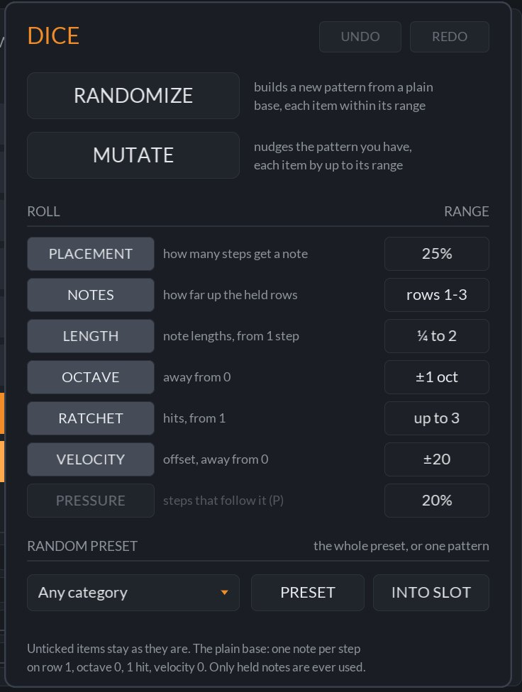
Untick an item to keep it as it is: untick OCTAVE, say, and Mutate leaves the octaves alone. Each item's range is in the box at its right.
| Item | Range | Default | What it rolls |
|---|---|---|---|
| PLACEMENT | 0–100% | 25% | The share of steps left empty (Randomize) or flipped between a note and a rest (Mutate). |
| NOTES | rows 1–1 to 1–8 | rows 1–3 | Which rows notes land on. |
| LENGTH | ¼ to 4 steps | ¼ to 2 | Note lengths. |
| OCTAVE | 0 to ±3 oct | ±1 oct | Octave lane values. |
| RATCHET | up to 1–8 | up to 3 | Ratchet lane counts. |
| VELOCITY | 0 to ±64 | ±20 | Velocity lane offsets. |
| PRESSURE | 0–100% | 20% | The share of steps with P lit. Unticked to start with. |
The dice roll the pattern on the grid, only up to its length. They only ever change the pattern, never the held notes, so JArp still plays only notes you hold.
129 presets in 27 categories, each built on how the style is really played.
The preset bar steps through the factory bank and then your own with its arrows; scrolling over it does too, and clicking the name opens the menu by category. A preset holds the settings and all eight patterns, and loading one from the bar replaces them all. To load one pattern into one slot instead, right-click the slot's number and use Load from preset (Chapter 12). The star beside the name makes the current preset a favorite.
Most presets use PITCH rows with OCT, so a triad and a 7th chord both play them in shape. Presets marked (chain) use several patterns: CHORD moves on with each new chord, LOOP plays them one after another. No factory pattern skips a note: each walks the notes you hold in turn, from the lowest, with none left out. The shape comes from your voicing, so for a root-fifth line hold a root and fifth, and for root-third-fifth hold the triad.
Each preset has a one-line blurb, shown in the header beside the logo: what the preset is and how to play it (for a Drum Kit preset, which keys to hold). Click it to write your own; Enter or a click elsewhere keeps it, Esc drops it. The blurb is kept with the project, and SAVE keeps it with your preset. A factory preset's own blurb comes back when you load it again. The lists below are those blurbs.
SAVE names the current settings and writes them as a small text file, with the patterns in a .jarppatterns file beside it and the blurb in a .jarpnote file. Copy all three between machines together.
| macOS | ~/Library/Application Support/JArp/Presets |
| Windows | %APPDATA%\JArp\Presets |
| Linux | ~/.config/JArp/Presets |
Starting points to draw from. Each starts from an empty pattern: load Init and click CLEAR.
The classic arpeggio, fitted to every chord you play.
A held root with the chord climbing over it.
A bass line that finds the fifth of any chord.
Drums you can lift out one at a time.
Press harder for more hits.
Generative movement over a held chord.
A different figure for each section, by hand.
The hand you hold decides which lines play.
Every parameter JArp exposes to the host, then the settings each pattern keeps for itself.
| Parameter | Panel | Range | Default |
|---|---|---|---|
| Rate | TIMING · RATE | 1/32, 1/16T, 1/16, 1/8T, 1/8, 1/4 | 1/16 |
| Swing | TIMING · SWING | 50–75% | 50% |
| Pattern | PATTERN · 1 to 8 | 1–8 | 1 |
| Advance | PATTERN · OFF / CHORD / LOOP | Off, Chord, Loop | Off |
| Latch | PLAYBACK · LATCH | Off, On | Off |
| Restart | PLAYBACK · RESTART | Song, Note, Bar | Note |
| Rows By | ROWS BY | Pitch, Degree, Held Degree, Spread | Pitch |
| Empty Rows | EMPTY ROWS | Rest, Wrap, Octave | Rest |
| Scale Key | SCALE (key) | C to B | C |
| Scale | SCALE (major or minor) | Major, Minor | Major |
| Octave Range | PLAYBACK · RANGE | 1, 2, 3, 4 Oct | 2 Oct |
| Keep Rows | PLAYBACK · KEEP ROWS | Off, On | Off |
| Pressure to Velocity | PRESSURE · VELOCITY | 0–100% | 50% |
| Pressure Curve | PRESSURE · CURVE | Soft 100% – Linear – Hard 100% | Linear |
| Pressure to Ratchet | PRESSURE · RATCHET | 0–100% | 60% |
| Max Hits | PRESSURE · MAX HITS | 1–8 | 4 |
Swing, Pressure to Velocity, Pressure Curve and Pressure to Ratchet can also be modulated, in hosts that support CLAP modulation.
| Setting | Where | Range | Default |
|---|---|---|---|
| Notes | The grid | 8 rows × 128 steps, ¼ step to the whole pattern long | – |
| Length | Purple bar, LENGTH knob | 1–128 steps | 8 (Init) |
| Count | LENGTH · COUNT | Steps, Held | Steps |
| Times | LENGTH · TIMES | ×1 – ×8 | ×1 |
| Plus | LENGTH · PLUS | −16 – +16 | +0 |
| Direction | LENGTH · DIRECTION | One Way, Bounce | One Way |
| Repeat Ends | LENGTH · REPEAT ENDS | Off, On | Off |
| Octave lane | OCTAVE, per step or note | −3 to +3 | 0 |
| Ratchet lane | RATCHET, per step or note | 1–8 hits, P on or off | 1, off |
| Velocity lane | VELOCITY, per step or note | −64 to +64 | 0 |
| Chance lane | CHANCE, per step or note | 0–100% | 100% |
| Format | CLAP 1.2 note effect (features: note-effect, utility). Note ports in and out, MIDI and CLAP note dialects. |
| Platforms | macOS universal (10.15+ Intel, 11+ Apple Silicon), Windows (64-bit), Linux (64-bit). |
| Patterns | 8, each up to 128 steps by 8 rows, notes in quarter steps. |
| Rates | 1/32, 1/16 triplet, 1/16, 1/8 triplet, 1/8, 1/4; swing 50–75%. |
| MPE | Each note on its finger's channel. Channel pressure, CC74 and pitch bend pass through; poly aftertouch and CLAP note expressions follow every note from a finger. |
| Clock | Song position and tempo when the transport runs; its own clock at the host's tempo when stopped. |
| Parameters | 16, all automatable. The patterns are saved with the project. |
| Presets | 129 factory presets in 27 categories. User presets are text files with .jarppatterns and .jarpnote files beside them. |
| Panel | 900 × 743 at 100%; 75%, 100%, 125%, 150% and 200%. |
| Symptom | What to check |
|---|---|
| JArp doesn't appear in my host (macOS) | The download is probably quarantined. See the warning in Chapter 2, then rescan plug-ins. |
| JArp doesn't appear in Ableton Live | Live doesn't load CLAP plug-ins. Use a CLAP host such as Bitwig Studio or REAPER. |
| Nothing plays when I hold a chord | Check that JArp is before the instrument on the same track, and that the pattern has notes (its number is lit). With COUNT on HELD and a short chord, only the first steps play. |
| Some notes on the grid don't play | Notes that show grey are on rows nothing held plays: rows above your chord with EMPTY ROWS on REST, or degrees you aren't holding in HELD DEGREE. Hold more notes, or switch to WRAP or OCT. A note with CHANCE under 100% skips some passes. |
| The arp climbs too high, or wraps back down | That is RANGE folding notes into its octaves. Raise it to climb further, or lower it to stay in one register. |
| Notes keep playing after I let go | LATCH is on, or the sustain pedal is down. |
| The pattern starts in the middle | RESTART is on SONG, which locks it to the song position. Use NOTE to start from your first note. |
| Drums move to the wrong row when I lift one | Turn on KEEP ROWS. |
| Pressure does nothing | Your controller must send per-note pressure (MPE or poly aftertouch). Check PRESSURE · VELOCITY is up, and that P is lit on the steps that should ratchet. |
| The synth ignores slide and bend | Put the synth in MPE mode. Without it, every finger's channel sounds the same. |